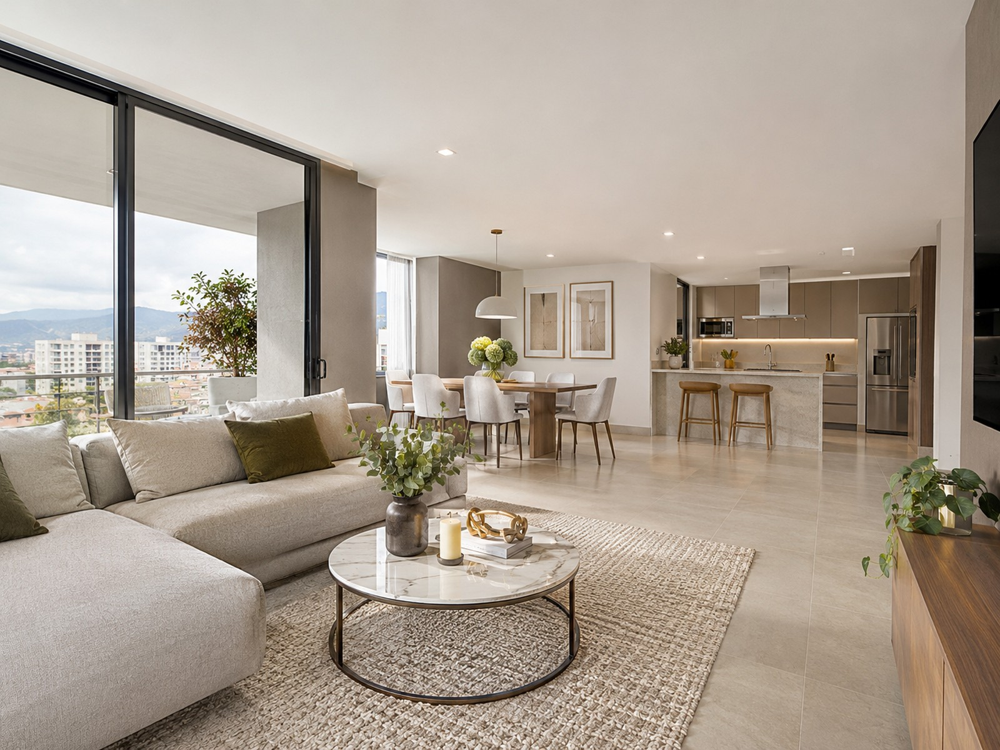
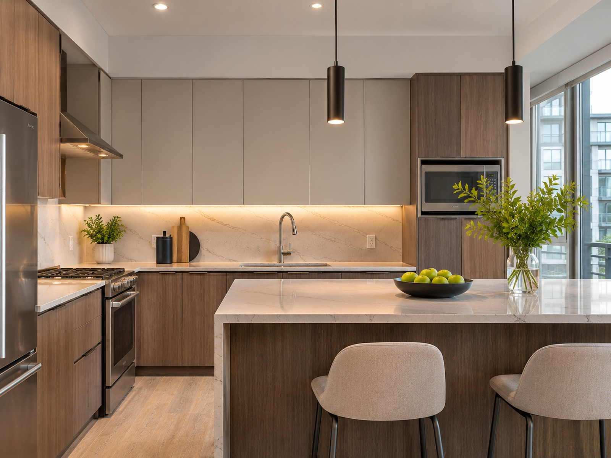

Tarrajeo y contrapisos
Preparación, nivelación y acabado de superficies.
Soluciones en acabados integrales y partidas especializadas para inmobiliarias y constructoras. Intervenimos según planos, metrados, especificaciones y el alcance contratado.
FLORES | Ingeniería y Construcción es la marca comercial de MIGORESLAV CONSTRUCTION S.A.C. Atendemos al sector privado con énfasis en acabados y obra blanca para desarrollos inmobiliarios y edificaciones multifamiliares.
Elaboramos propuestas por partidas o integrales, considerando el alcance solicitado, planos, metrados y condiciones reales de ejecución. También atendemos remodelaciones y construcciones para propietarios particulares.
Conoce nuestro enfoque de respaldo y documentaciónNuestro servicio principal son los acabados para edificios multifamiliares. Podemos asumir partidas específicas o un alcance integral, según el proyecto.

Imagen referencialObra blanca, pisos, pintura, carpintería e instalaciones complementarias para unidades y áreas comunes.
Ver alcances → Imagen referencial
Imagen referencialEjecución de partidas definidas, coordinadas con el equipo de obra y sus especificaciones técnicas.
Ver especialidades → Imagen referencial
Imagen referencialIntervenciones de albañilería, adecuaciones y ampliaciones sujetas a evaluación técnica y permisos aplicables.
Explorar servicio →
Imagen referencialRenovación de departamentos, viviendas, oficinas y espacios comerciales con un alcance previamente acordado.
Explorar servicio →La propuesta se ajusta a los planos y especificaciones de cada obra; la disponibilidad de cada especialidad se confirma antes de contratar.
Preparación, nivelación y acabado de superficies.
Porcelanatos, cerámicos y enchapes.
Tratamiento y acabado de superficies.
Divisiones y soluciones interiores.
Puertas, clósets y muebles de melamina.
Redes y colocación de aparatos sanitarios.
Puntos, iluminación y adecuaciones.
Cerramientos según medidas y especificaciones.
Para inmobiliarias, constructoras y clientes privados. Definimos cada partida y sus responsabilidades por escrito antes del inicio.
Ejecutamos las partidas contratadas con materiales suministrados por el cliente, conforme al alcance definido.
Incluimos los materiales y la mano de obra correspondientes a las partidas detalladas en la propuesta.
Una inmobiliaria necesita claridad, no fotografías que aparenten ser trabajos propios. Nuestro sitio identifica las imágenes referenciales y muestra certificados que puedes consultar en español, sin atribuirnos obras que no podamos documentar.
Portafolio fotográfico: en preparación. La documentación disponible para cada propuesta se coordina según los requerimientos del proyecto.
Una secuencia de trabajo planteada para coordinar con el área de proyectos, supervisión y residentes de obra.
Recibimos planos, metrados, especificaciones y condiciones de la obra.
Definimos alcance, modalidad, presupuesto, plazos y exclusiones.
Coordinamos frentes de trabajo, avances y observaciones con el responsable designado.
Verificamos las partidas contratadas, atendemos observaciones y formalizamos la entrega.
Las condiciones definitivas de ejecución y garantía se establecen en cada cotización y contrato.
Comparte ubicación, metraje, número de unidades y partidas. Si tienes planos o metrados, podremos precisar mejor la propuesta.